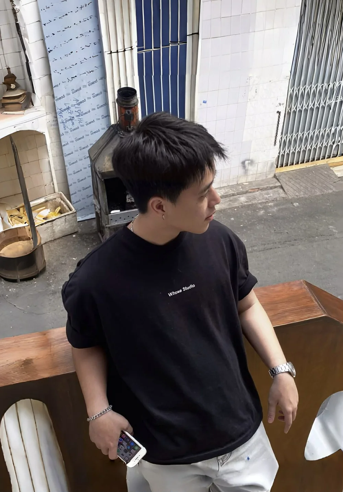

UI/UX Designer
MangoAds · Vietnam SEO Optimization and Web Design Agency
- Designing user flows, wireframes and responsive interfaces for web experiences.
- Contributing to visual systems and interaction details across digital design work.
UI/UX DESIGNER × SYSTEMS THINKER
I design thoughtful interfaces, purposeful flows and product systems that help people understand what to do next.

01 / PORTRAITEach project exposes a different part of my practice — hierarchy, systems, product structure or redesign thinking.
Hover or focus to preview · Click to openI move from problem framing, user flows and information hierarchy into high-fidelity UI — then refine interaction details around the constraints of the real product.
Verified background, role progression and the environments where I have been shaping web and product experiences.
MangoAds · Vietnam SEO Optimization and Web Design Agency
Tikera Technology and Brand Development Company · Ho Chi Minh City
Trésor Solution Company · Remote
Figma · HTML/CSS/JS · GitHub
University of Science — HCMUS · Information Technology · 2021–2026
Claude Bernard University Lyon 1 · Information Technology · 2021–2025
OPEN TO THE RIGHT CONVERSATION
If you are hiring a UI/UX Designer or shaping a product/web experience that needs stronger structure, send me the context and what you are trying to solve.
anhnghia9a633@gmail.com